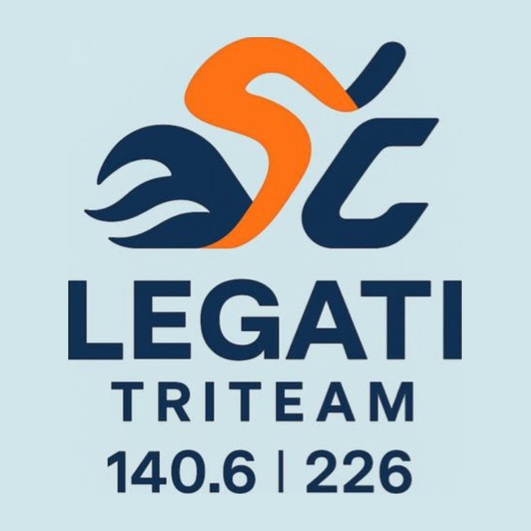

Legati Tri Dagboek 2027
Even laden…
Legati Tri Dagboek 2027
Het trainingsdagboek van Legati Triteam. Je dagboek, je zones en je trainingen blijven privé; enkel het clubgedeelte deel je met de ploeg.
Bijna klaar
Je account wacht op goedkeuring van de beheerder. Je krijgt toegang zodra hij je goedkeurt; kijk dan gewoon opnieuw.
Je planning
Op het plan
Laatste training
Herstel en ochtendcheck
Energie
leegtop
Spierpijn
geenveel
Je week
Club
Activiteiten
Tip: zet de activiteiten waarvoor je komt vanzelf in je gsm-agenda. Koppel je agenda bij Instellingen
Activiteit toevoegen
Datum prikken
Stem op de datums die voor jou passen. Wie de poll startte, kiest daarna de datum en zet ze in de agenda.
Poll starten
Wedstrijden van de ploeg
Van ploegmaats die hun wedstrijden delen via Instellingen.
Deze week
maandag tot vandaagAlleen ploegmaats die het zelf aanzetten, staan erin. Het klassement telt tijd en kilometers, niet hoe hard: rustig trainen telt even zwaar.
Wat de ploeg van je ziet
Altijd: je naam, je berichten en voor welke clubactiviteiten je inschrijft.
Alleen als je het aanzet: je weektotalen (tijd en km), je records en je wedstrijden.
Nooit: je zones, je plan, je trainingen, hartslag, vermogen, ochtendcheck, slaap en HRV.
Je coach: heb je een coach, dan ziet alleen hij je schema, trainingen, zones en ochtendcheck.
Clubrecords
Je plan
Je sporters
Logboek
Je trainingen komen hier vanzelf binnen uit Garmin Connect of Wahoo. Klik op Analyse om de analyse van die training te zien.
Training opladen
Laad het .fit-bestand van je training op, dan krijg je meteen je analyse met grafieken. In Garmin Connect op de computer: open je activiteit, klik op het tandwiel en kies Origineel exporteren. Het .zip-bestand mag je zo opladen. Ook .fit-bestanden uit Wahoo of Strava werken.
Zelf een training toevoegen
Voor een training zonder horloge, of als je horloge niet synchroniseerde.
Jouw zones
Testresultaten inlezen
met AIKreeg je een verslag van je inspanningstest, lactaattest of zweettest van je trainer, sportarts of labo? Laad het hier op. Je drempels en zones worden automatisch ingevuld, en je kijkt ze eerst na voor ze worden overgenomen.
Pdf, foto of screenshot van je resultaten
Lopen
Stuur in de basis op hartslag, niet op tempo. Het tempo per km is een richtwaarde op vlak terrein.
| Zone | Naam | Hartslag | Tempo /km | Waarvoor |
|---|
Fietsen
Je rijdt op vermogen; de hartslag is controle. Hoger dan normaal bij hetzelfde vermogen betekent vermoeidheid.
| Zone | Naam | Vermogen | Hartslag | Waarvoor |
|---|
Zwemmen
| Zone | Naam | Tempo /100 m | Waarvoor |
|---|
In je schema: scull #1 = armen gestrekt voor je hoofd, kleine heen-en-weerbewegingen met de handen. Scull #2 = hetzelfde met de handen ter hoogte van je heupen. Doggy paddle = hondjesslag, armen blijven onder water. Inhaalslag = de voorste hand wacht tot de andere aantikt. 6-1-6 = zes beenslagen op je zij, één slag, zes beenslagen op de andere zij. PB = pull buoy. Climax = elk stuk iets sneller. R20" = 20 seconden rust.
Voeding en zout tijdens training
| Duur | Drinken | Natrium | Koolhydraten |
|---|
Opbouw koolhydraten
Voor trainingen vanaf 75 minuten; bij lopen hooguit 90 g per uur. Het blok op Vandaag rekent automatisch met de periode van die dag.
| Periode | Per uur | Waarom |
|---|
Kramp? Check eerst: genoeg gedronken en gegeten, tempo niet te hoog. Dan extra natrium, extra koolhydraten, trager, en rekken.
Klopt er iets niet meer na een nieuwe test? Pas je drempels aan bij Instellingen; alle tabellen rekenen mee.
Materiaal
De kilometers komen uit je logboek: lopen telt voor loopschoenen, fietsritten voor je fiets.
Nieuw materiaal
Instellingen
Alles wat je hier instelt, gebruikt de website meteen voor je zones, plan, voeding en ochtendcheck.